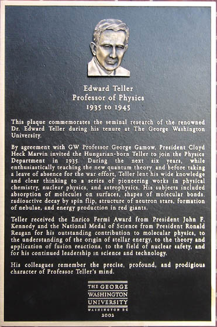
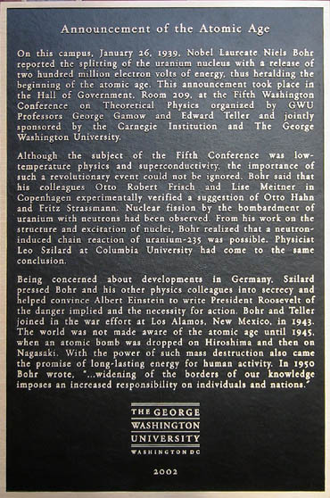
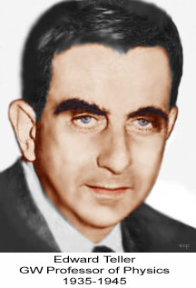
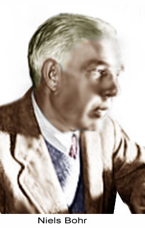
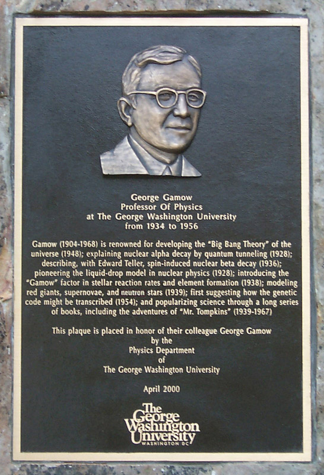

|
History of Astrophysics at GW |
Two New GW Historical Plaques
November, 2003
William C. Parke, Chair, Physics Department
Two new plaques have joined others on campus in the commemoration of GW history.
Two new bronze plaques have been mounted at the entrance of the Chemistry and Physics building, Corcoran Hall. The plaques were commissioned by President Trachtenberg to show more of the rich history of our university.
|  |  |
{kind=link}
{kind=link}
The first plaque memorializes the contribution of GW Professor Edward Teller while he was a professor at GW (1935-1945).
Gamow was invited to GW in 1934 by then GW President Cloyd Hecht Marvin. Marvin wanted to strengthen physics at GW. At first he thought to build an experimental program, but Merle Tuve at the Carnegie Institution convinced him that theorists would be less expensive and so more effective use of the money he had to spend. President Marvin had Gamow and Teller in mind, as he had met them some years before. Gamow agreed to come if there would be funds for a yearly physics conference and if Teller could join him.
|  |
In 1935, Teller moved into a home on Garfield Street with his wife Mici
and began work. His teaching duties were mainly lectures on the new
quantum theory. Although he was 27, most of his students were older.
A few became research collaborators, including Sterling Hendricks,
Ferdinand Brickwedde, and Stephen Brunauer. Gamow often engaged
Teller with ideas in the world of nuclear physics and astrophysics,
but Teller largely remained a chemical physicist during his time at
GW, or, as physicist Placzek called him, a “molecule
inspector”.
While at GW, Teller was a central collaborator in producing a series of seminal papers in chemical and nuclear physics, including molecular adsorption on surfaces, shapes of molecules, spin-induced radioactive decay, neutron stars, nebulae formation, and energy production in red giants. Teller received the Enrico Fermi Award from President John F. Kennedy and the National Medal of Science from President Ronald Reagan for his outstanding contribution to molecular physics, to the understanding of the origin of stellar energy, to the theory and application of fusion reactions, to the field of nuclear safety, and for his continued leadership in science and technology. His colleagues remember the precise, profound, and prodigious character of Edward's mind. |
|  |
The second plaque describes the announcement of the atomic age, an event
which took place on our campus on January 26th, 1939. On that date,
Nobel prize winner Niels Bohr reported the splitting of the uranium
nucleus. Bohr was attending the Fifth Washington Conference on
Theoretical Physics organized by Professors George Gamow and Edward
Teller of GWU and by the Carnegie Institution. Professor Gamow later
became famous for proposing the big bang theory of the universe, and
Teller for his work on the hydrogen bomb.
The implications of the announcement of the atomic age were not made known to the public until 1945. In 1950, in an open letter to the United Nations, Bohr wrote, "Above all, it should be appreciated that we are faced only with the beginning of a development and that, probably within the very near future, means will be found to simplify the methods of production of the active substances and intensify their effects to an extent which may permit any nation possessing great industrial resources to command powers of destruction surpassing all previous imagination." In the same document, he says, "...widening of the borders of our knowledge imposes an increased responsibility on individuals and nations." |
The George Gamow Plaque
|  | The new plaques join another that commemorates the contribution of George Gamow. It was designed by Prof. Parke and then commissioned and dedicated by University President Stephen Trachtenberg in April of the year 2000 and placed in front of the 21st Street entrance to Samson Hall. |